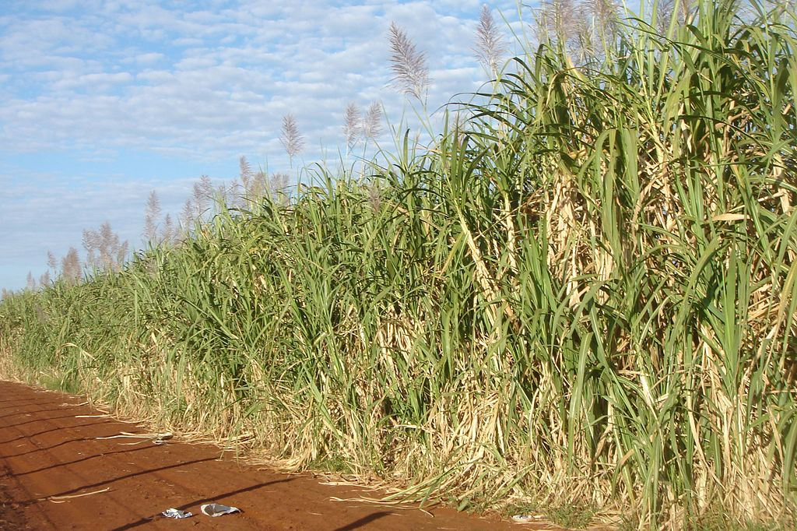
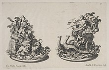
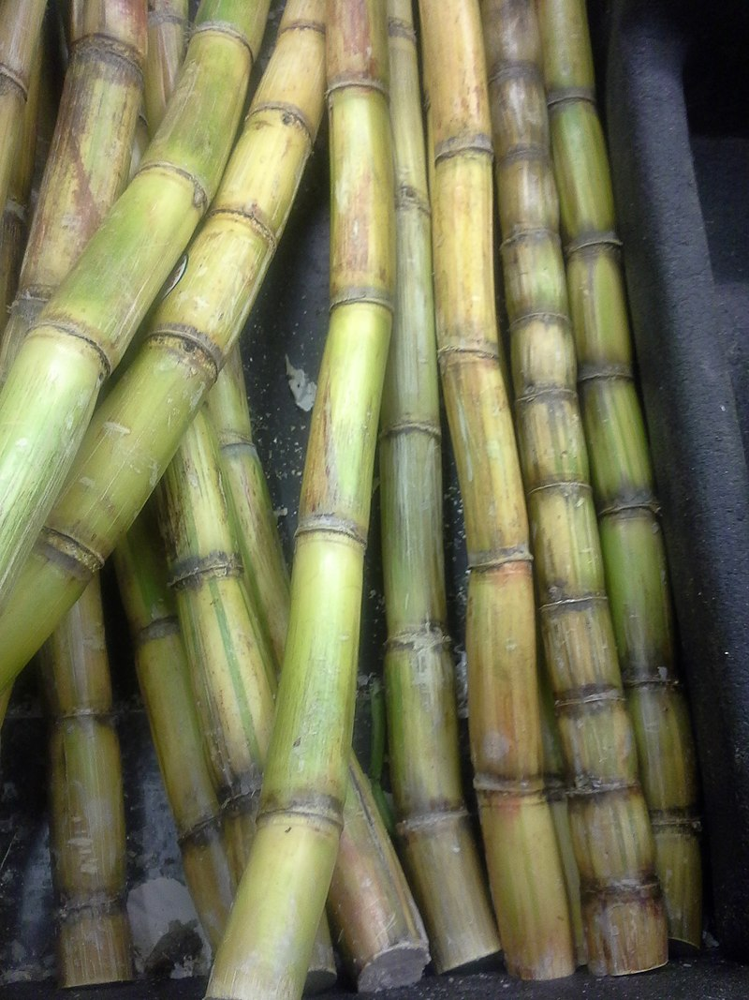
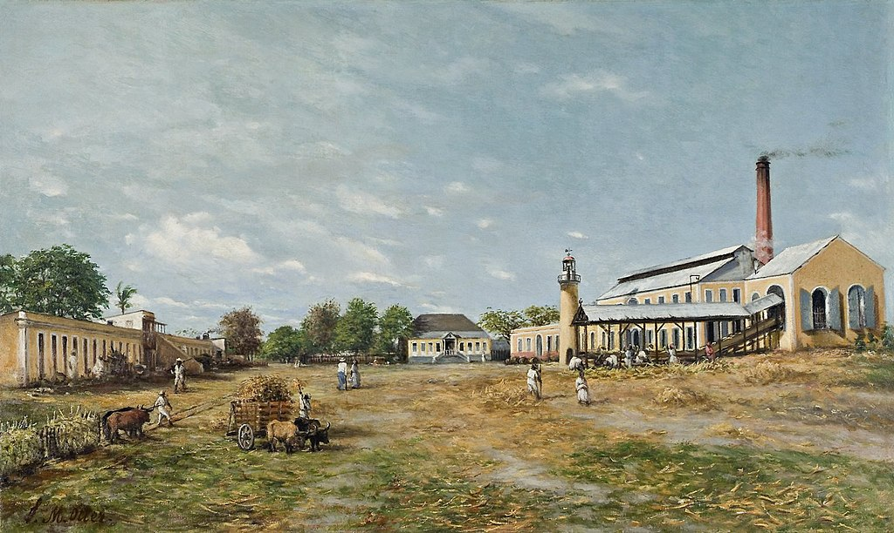
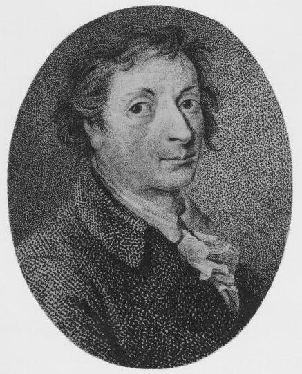
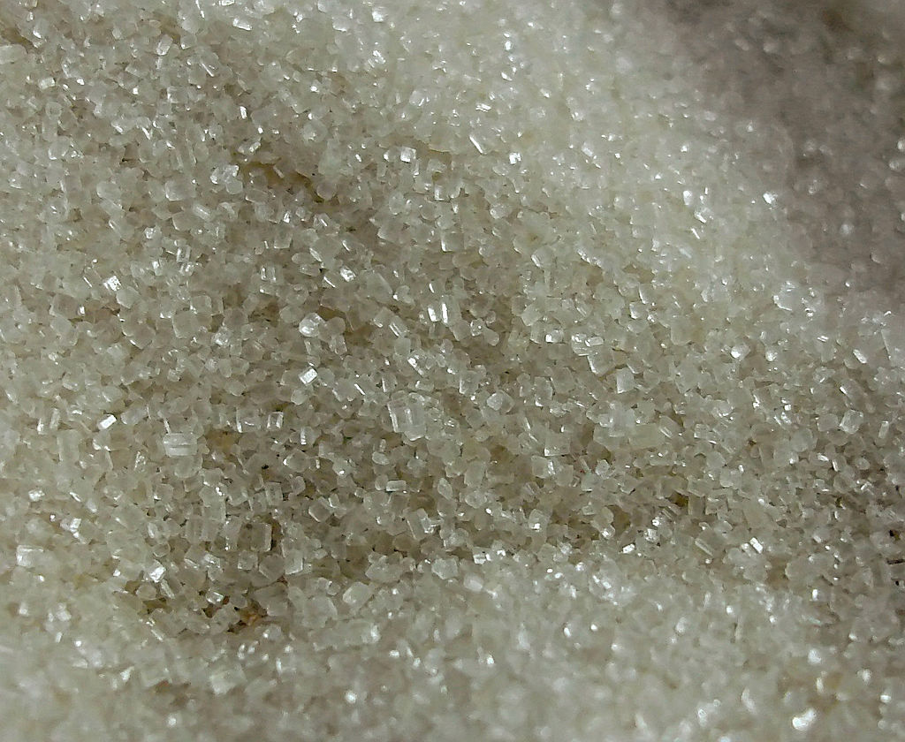
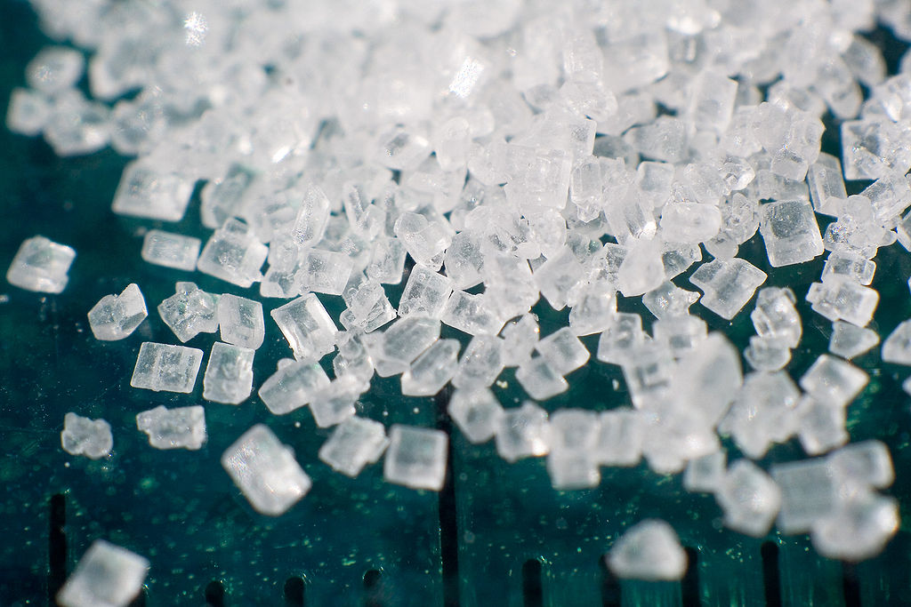
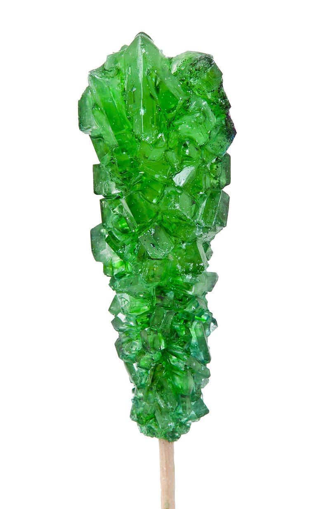
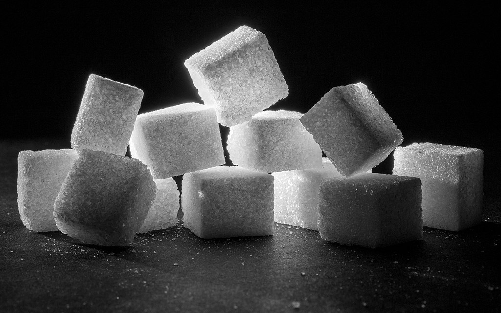
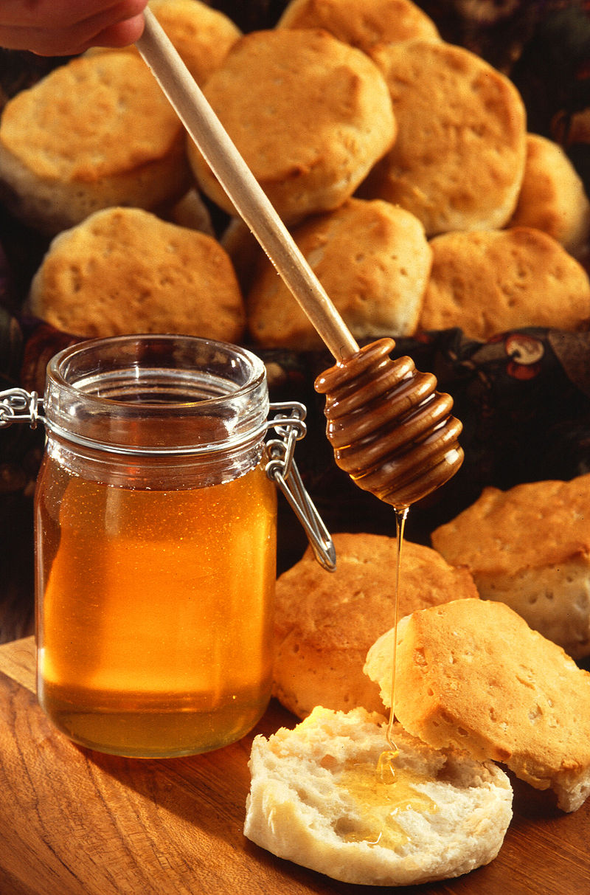

Sugar From Wikipedia, the free encyclopedia Jump to navigationJump to search This article is about the class of sweet-flavored substances used as food. For common table sugar, see Sucrose. For other uses, see Sugar (disambiguation). Sugars (clockwise from top-left): white refined, unrefined, unprocessed cane, brown Sugar is the generic name for sweet-tasting, soluble carbohydrates, many of which are used in food. Simple sugars, also called monosaccharides, include glucose, fructose, and galactose. Compound sugars, also called disaccharides or double sugars, are molecules made of two bonded monosaccharides; common examples are sucrose (glucose + fructose), lactose (glucose + galactose), and maltose (two molecules of glucose). White sugar is a refined form of sucrose. In the body, compound sugars are hydrolysed into simple sugars.
Longer chains of monosaccharides (>2) are not regarded as sugars, and are called oligosaccharides or polysaccharides. Starch is a glucose polymer found in plants, and is the most abundant source of energy in human food. Some other chemical substances, such as glycerol and sugar alcohols, may have a sweet taste, but are not classified as sugar. Sugars are found in the tissues of most plants. Honey and fruit are abundant natural sources of simple sugars. Sucrose is especially concentrated in sugarcane and sugar beet, making them ideal for efficient commercial extraction to make refined sugar. In 2016, the combined world production of those two crops was about two billion tonnes. Maltose may be produced by malting grain. Lactose is the only sugar that cannot be extracted from plants. It can only be found in milk, including human breast milk, and in some dairy products. A cheap source of sugar is corn syrup, industrially produced by converting corn starch into sugars, such as maltose, fructose and glucose. German sugar sculpture, 1880 Sucrose is used in prepared foods (e.g. cookies and cakes), is sometimes added to commercially available processed food and beverages, and may be used by people as a sweetener for foods (e.g. toast and cereal) and beverages (e.g. coffee and tea). The average person consumes about 24 kilograms (53 pounds) of sugar each year, with North and South Americans consuming up to 50 kg (110 lb) and Africans consuming under 20 kg (44 lb).[1]
 As sugar consumption grew in the latter part of the 20th century, researchers began to examine whether a diet high in sugar, especially refined sugar, was damaging to human health. Excessive consumption of sugar has been implicated in the onset of obesity, diabetes, cardiovascular disease, and tooth decay. Numerous studies have tried to clarify those implications, but with varying results, mainly because of the difficulty of finding populations for use as controls that consume little or no sugar. In 2015, the World Health Organization recommended that adults and children reduce their intake of free sugars to less than 10%, and encouraged a reduction to below 5%, of their total energy intake.[2] Contents 1 Etymology 2 History 2.1 Ancient world to Renaissance 2.1.1 Asia 2.1.2 Europe 2.2 Modern history 3 Chemistry 3.1 Natural polymers 3.2 Flammability and heat response 4 Types 4.1 Monosaccharides 4.2 Disaccharides 5 Sources 6 Production 6.1 Sugarcane 6.2 Sugar beet 6.3 Refining 7 Forms and uses 7.1 Crystal size 7.2 Shapes 7.3 Brown sugars 7.4 Liquid sugars 7.5 Other sweeteners 8 Consumption 9 Nutrition and flavor 10 Health effects 10.1 Sugar industry funding and health information 10.2 Obesity and metabolic syndrome 10.3 Hyperactivity 10.4 Tooth decay 10.5 Nutritional displacement 10.6 Recommended dietary intake 11 Measurements 12 Society and culture 13 Gallery 14 See also 15 References 16 Further reading 17 External links Etymology The etymology reflects the spread of the commodity. From Sanskrit (śarkarā), meaning "ground or candied sugar", came Persian shakar, then to 12th century French sucre and the English sugar.[3]
The English word jaggery, a coarse brown sugar made from date palm sap or sugarcane juice, has a similar etymological origin: Portuguese jágara from the Malayalam cakkarā, which is from the Sanskrit śarkarā.[4] History Main article: History of sugar Ancient world to Renaissance Sugar cane plantation Asia Sugar has been produced in the Indian subcontinent[5] since ancient times and its cultivation spread from there into modern-day Afghanistan through the Khyber Pass.[6] It was not plentiful or cheap in early times, and in most parts of the world, honey was more often used for sweetening. Originally, people chewed raw sugarcane to extract its sweetness. Even after refined sugarcane became more widely available during the colonial era,[7] palm sugar was preferred in Java and other sugar producing parts of southeast Asia, and along with coconut sugar, is still used locally to make desserts today.[8][9]
Sugarcane is native of tropical areas such as the Indian subcontinent (South Asia) and Southeast Asia.[5][10] Different species seem to have originated from different locations with Saccharum barberi originating in India and S. edule and S. officinarum coming from New Guinea.[10][11] One of the earliest historical references to sugarcane is in Chinese manuscripts dating to 8th century BCE, which state that the use of sugarcane originated in India.[12] In the tradition of Indian medicine (āyurveda), the sugarcane is known by the name Ikṣu and the sugarcane juice is known as Phāṇita. Its varieties, synonyms and characteristics are defined in nighaṇṭus such as the Bhāvaprakāśa (1.6.23, group of sugarcanes).[13] Sugar remained relatively unimportant until the Indians discovered methods of turning sugarcane juice into granulated crystals that were easier to store and to transport.[14] Crystallized sugar was discovered by the time of the Imperial Guptas, around the 5th century CE.[14] In the local Indian language, these crystals were called khanda (Devanagari: खण्ड, Khaṇḍa), which is the source of the word candy.[15] Indian sailors, who carried clarified butter and sugar as supplies, introduced knowledge of sugar along the various trade routes they travelled.[14] Traveling Buddhist monks took sugar crystallization methods to China.[16] During the reign of Harsha (r. 606–647) in North India, Indian envoys in Tang China taught methods of cultivating sugarcane after Emperor Taizong of Tang (r. 626–649) made known his interest in sugar. China established its first sugarcane plantations in the seventh century.[17] Chinese documents confirm at least two missions to India, initiated in 647 CE, to obtain technology for sugar refining.[18] In the Indian subcontinent,[5] the Middle East and China, sugar became a staple of cooking and desserts.
Europe Two elaborate sugar triomfi of goddesses for a dinner given by the Earl of Castlemaine, British Ambassador in Rome, 1687 Nearchus, admiral of Alexander of Macedonia, knew of sugar during the year 325 BC, because of his participation in the campaign of India led by Alexander (Arrian, Anabasis).[19][20] The Greek physician Pedanius Dioscorides in the 1st century CE described sugar in his medical treatise De Materia Medica,[21] and Pliny the Elder, a 1st-century CE Roman, described sugar in his Natural History: "Sugar is made in Arabia as well, but Indian sugar is better. It is a kind of honey found in cane, white as gum, and it crunches between the teeth. It comes in lumps the size of a hazelnut. Sugar is used only for medical purposes."[22] Crusaders brought sugar back to Europe after their campaigns in the Holy Land, where they encountered caravans carrying "sweet salt". Early in the 12th century, Venice acquired some villages near Tyre and set up estates to produce sugar for export to Europe. It supplemented the use of honey, which had previously been the only available sweetener.[23] Crusade chronicler William of Tyre, writing in the late 12th century, described sugar as "very necessary for the use and health of mankind".[24] In the 15th century, Venice was the chief sugar refining and distribution center in Europe.[12]
There was a drastic change in the mid-15th century, when São Tomé, Madeira, and the Canary Islands were settled from Europe, and sugar grown there.[25][26] After this an "all-consuming passion for sugar ... swept through society" as it became far more easily available, though initially still very expensive.[27] By 1492, Madeira was producing over 1,400 tonnes (3,000,000 lb) of sugar annually.[28] Genoa, one of the centers of distribution, became known for candied fruit, while Venice specialized in pastries, sweets (candies), and sugar sculptures. Sugar was considered to have "valuable medicinal properties" as a "warm" food under prevailing categories, being "helpful to the stomach, to cure cold diseases, and sooth lung complaints".[29] A feast given in Tours in 1457 by Gaston de Foix, which is "probably the best and most complete account we have of a late medieval banquet" includes the first mention of sugar sculptures, as the final food brought in was "a heraldic menagerie sculpted in sugar: lions, stags, monkeys ... each holding in paw or beak the arms of the Hungarian king".[30] Other recorded grand feasts in the decades following included similar pieces.[31] Originally the sculptures seem to have been eaten in the meal, but later they become merely table decorations, the most elaborate called triomfi. Several significant sculptors are known to have produced them; in some cases their preliminary drawings survive. Early ones were in brown sugar, partly cast in molds, with the final touches carved. They continued to be used until at least the Coronation Banquet for Edward VII of the United Kingdom in 1903; among other sculptures every guest was given a sugar crown to take away.[32]
Modern history See also: Triangular trade Close-up image of sugar cane; demand for sugar contributed to creating colonial systems in areas where cultivation of sugar cane was profitable. Hacienda La Fortuna. A sugar mill complex in Puerto Rico, painted by Francisco Oller in 1885, Brooklyn Museum In August 1492, Christopher Columbus collected sugar cane samples in La Gomera in the Canary Islands, and introduced it to the New World.[33] The cuttings were planted and the first sugar-cane harvest in Hispaniola took place in 1501. Many sugar mills had been constructed in Cuba and Jamaica by the 1520s.[34] The Portuguese took sugar cane to Brazil. By 1540, there were 800 cane-sugar mills in Santa Catarina Island and another 2,000 on the north coast of Brazil, Demarara, and Surinam. It took until 1600 for Brazilian sugar production to exceed that of São Tomé, which was the main center of sugar production in sixteenth century.[26] German chemists Andreas Sigismund Marggraf and Franz Karl Achard (pictured) both laid the foundation of the modern sugar industry Sugar was a luxury in Europe until the early 19th century, when it became more widely available, due to the rise of beet sugar in Prussia, and later in France under Napoleon.[35] Beet sugar was a German invention, since, in 1747, Andreas Sigismund Marggraf announced the discovery of sugar in beets and devised a method using alcohol to extract it.[36] Marggraf's student, Franz Karl Achard, devised an economical industrial method to extract the sugar in its pure form in the late 18th century.[37][38] Achard first produced beet sugar in 1783 in Kaulsdorf, and in 1801, the world's first beet sugar production facility was established in Cunern, Silesia (then part of Prussia, now Poland).[39] The works of Marggraf and Achard were the starting point for the sugar industry in Europe,[40] and for the modern sugar industry in general, since sugar was no longer a luxury product and a product almost only produced in warmer climates.[41]
Sugar became highly popular and by the 19th century, was found in every household. This evolution of taste and demand for sugar as an essential food ingredient resulted in major economic and social changes.[42] Demand drove, in part, the colonization of tropical islands and areas where labor-intensive sugarcane plantations and sugar manufacturing facilities could be successful.[42] World consumption increased more than 100 times from 1850 to 2000, led by Britain, where it increased from about 2 pounds per head per year in 1650 to 90 pounds by the early 20th century. In the late 18th century Britain consumed about half the sugar which reached Europe.[43]After slavery was abolished, the demand for workers in European colonies in the Caribbean was filled by indentured laborers from the Indian subcontinent.[44][45][46] Millions of enslaved or indentured laborers were brought to various European colonies in the Americas, Africa and Asia (as a result of demand in Europe for among other commodities, sugar), influencing the ethnic mixture of numerous nations around the globe.[47][48][49] Sugar also led to some industrialization of areas where sugar cane was grown. For example, in the 1790s Lieutenant J. Paterson, of the Bengal Presidency promoted to the British parliament the idea that sugar cane could grow in British India, where it had started, with many advantages and at less expense than in the West Indies. As a result, sugar factories were established in Bihar in eastern India.[50][51] During the Napoleonic Wars, sugar-beet production increased in continental Europe because of the difficulty of importing sugar when shipping was subject to blockade. By 1880 the sugar beet was the main source of sugar in Europe. It was also cultivated in Lincolnshire and other parts of England, although the United Kingdom continued to import the main part of its sugar from its colonies.[52] Until the late nineteenth century, sugar was purchased in loaves, which had to be cut using implements called sugar nips.[53] In later years, granulated sugar was more usually sold in bags. Sugar cubes were produced in the nineteenth century. The first inventor of a process to produce sugar in cube form was Jakob Christof Rad, director of a sugar refinery in Dačice. In 1841, he produced the first sugar cube in the world.[54] He began sugar-cube production after being granted a five-year patent for the process on 23 January 1843. Henry Tate of Tate & Lyle was another early manufacturer of sugar cubes at his refineries in Liverpool and London. Tate purchased a patent for sugar-cube manufacture from German Eugen Langen, who in 1872 had invented a different method of processing of sugar cubes.[55]
Sugar was rationed during World War I, though it was said that "No previous war in history has been fought so largely on sugar and so little on alcohol",[56] and more sharply during World War II.[57][58][59][60][61] Rationing led to the development and use of various artificial sweeteners.[57][62] Chemistry Sucrose: a disaccharide of glucose (left) and fructose (right), important molecules in the body. Scientifically, sugar loosely refers to a number of carbohydrates, such as monosaccharides, disaccharides, or oligosaccharides. Monosaccharides are also called "simple sugars", the most important being glucose. Most monosaccharides have a formula that conforms to C nH 2nO n with n between 3 and 7 (deoxyribose being an exception). Glucose has the molecular formula C 6H 12O 6. The names of typical sugars end with -ose, as in "glucose" and "fructose". Sometimes such words may also refer to any types of carbohydrates soluble in water. The acyclic mono- and disaccharides contain either aldehyde groups or ketone groups. These carbon-oxygen double bonds (C=O) are the reactive centers. All saccharides with more than one ring in their structure result from two or more monosaccharides joined by glycosidic bonds with the resultant loss of a molecule of water (H 2O) per bond.[63] Monosaccharides in a closed-chain form can form glycosidic bonds with other monosaccharides, creating disaccharides (such as sucrose) and polysaccharides (such as starch or cellulose). Enzymes must hydrolyze or otherwise break these glycosidic bonds before such compounds become metabolized. After digestion and absorption the principal monosaccharides present in the blood and internal tissues include glucose, fructose, and galactose. Many pentoses and hexoses can form ring structures. In these closed-chain forms, the aldehyde or ketone group remains non-free, so many of the reactions typical of these groups cannot occur. Glucose in solution exists mostly in the ring form at equilibrium, with less than 0.1% of the molecules in the open-chain form.[63] Natural polymers Biopolymers of sugars are common in nature. Through photosynthesis, plants produce glyceraldehyde-3-phosphate (G3P), a phosphated 3-carbon sugar that is used by the cell to make monosaccharides such as glucose (C 6H 12O 6) or (as in cane and beet) sucrose (C 12H 22O 11). Monosaccharides may be further converted into structural polysaccharides such as cellulose and pectin for cell wall construction or into energy reserves in the form of storage polysaccharides such as starch or inulin. Starch, consisting of two different polymers of glucose, is a readily degradable form of chemical energy stored by cells, and can be converted to other types of energy.[63] Another polymer of glucose is cellulose, which is a linear chain composed of several hundred or thousand glucose units. It is used by plants as a structural component in their cell walls. Humans can digest cellulose only to a very limited extent, though ruminants can do so with the help of symbiotic bacteria in their gut.[64] DNA and RNA are built up of the monosaccharides deoxyribose and ribose, respectively. Deoxyribose has the formula C 5H 10O 4 and ribose the formula C 5H 10O 5.[65] Flammability and heat response Magnification of grains of refined sucrose, the most common free sugar. Because sugars burn easily when exposed to flame, the handling of sugars risks dust explosion. The risk of explosion is higher when the sugar has been milled to superfine texture, such as for use in chewing gum.[66] The 2008 Georgia sugar refinery explosion, which killed 14 people and injured 36, and destroyed most of the refinery, was caused by the ignition of sugar dust.[67]